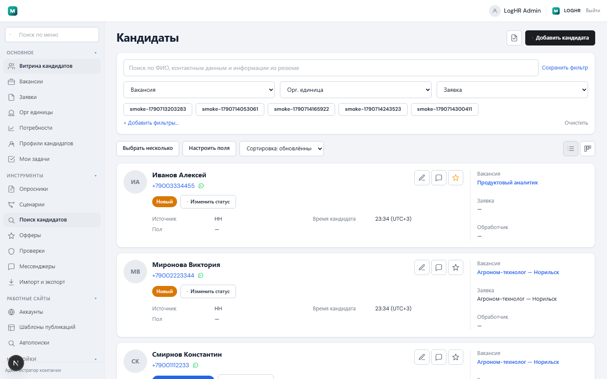
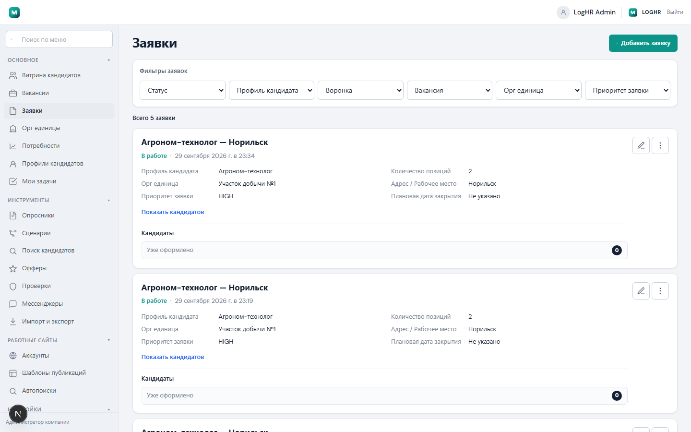
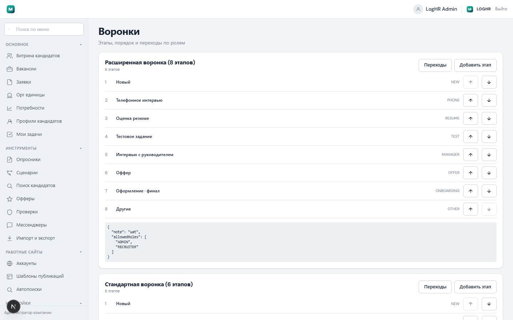
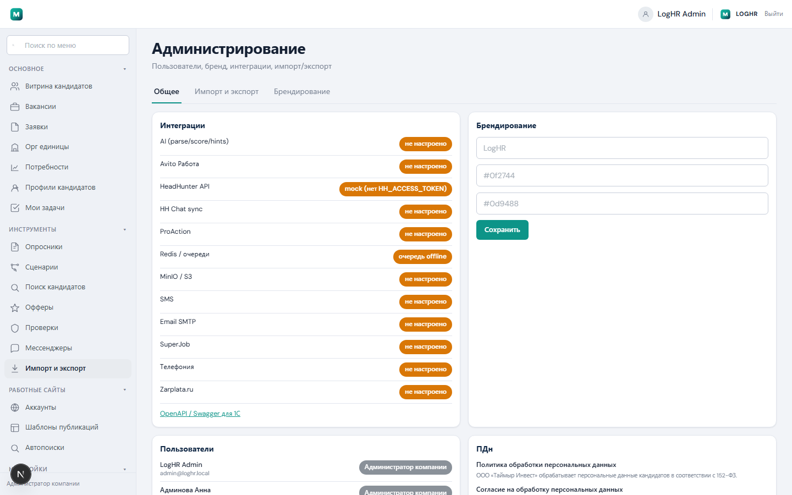
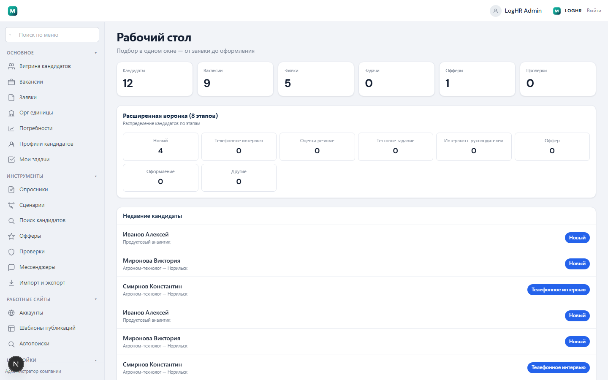
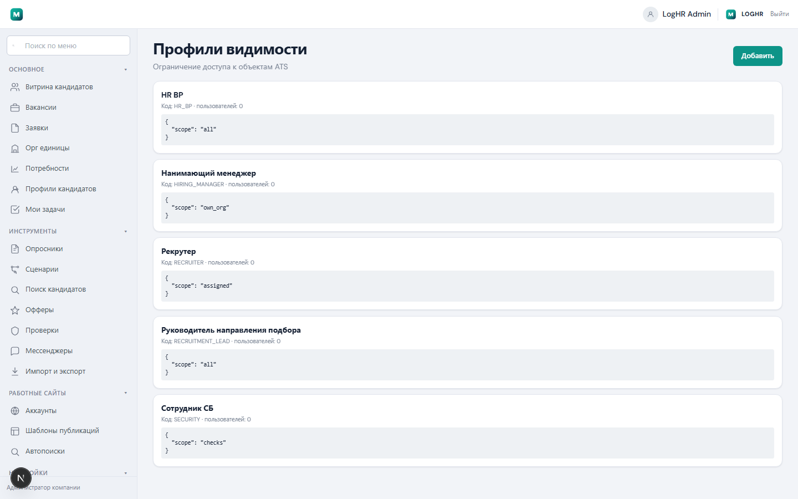

Своя система подбора персонала (ATS): от заявки на сотрудника до оффера и выхода на работу — в одном месте, на своём сервере, под брендом компании.
Рекрутер ищет кандидатов в HH, заявки живут в почте, статусы — «на словах». LogHR собирает процесс в одну систему.
Skillaz и аналоги — SaaS: данные у вендора, доработки в очереди. LogHR — свой код и база, можно дописывать под себя.
Кто согласовал заявку, на каком этапе кандидат, где застрял подбор — видно руководителю и HR BP.
Ведёт витрину кандидатов, меняет этапы, публикует вакансии, шлёт офферы и опросники.
Согласовывает заявки, смотрит воронку и отчёты, настраивает процесс.
Создаёт потребность и заявку, видит своих кандидатов и офферы.
Проводит проверки по кандидату через отдельный поток и публичную анкету.
Пользователи, бренд, интеграции, воронки, справочники, видимость данных.
Открывает ссылку: оффер, опросник или анкету проверки — без входа в ATS.
Обычный сценарий в LogHR — пять шагов:
Менеджер просит человека: должность, город, орг. единица.
HR BP одобряет → заявка «в работу», появляется вакансия.
Кандидаты в витрине, фильтры, этапы воронки, задачи рекрутеру.
Опросники, интервью, проверка СБ, AI-подсказки по резюме.
Письмо/ссылка кандидату → принял → закрытие заявки.






Сайт на Next.js — то, что видит рекрутер в браузере (порт 3000).
NestJS + база PostgreSQL — вся бизнес-логика, роли, заявки, кандидаты (порт 3001).
Redis (очереди задач), MinIO/S3 (файлы), Metabase (отчёты), расширение Chrome для HH.
Одна команда ставит базу и демо-данные:
Вход: admin@loghr.local / admin123
Код и база ваши. Можно менять процесс, воронки и интеграции без вендора. AI и отчёты — внутри контура компании.
Публикации на HH/Avito/SJ включаются ключами в `.env` — без ключа система не «рисует успех».
Откройте http://localhost:3000 · презентация: docs/presentation/index.html